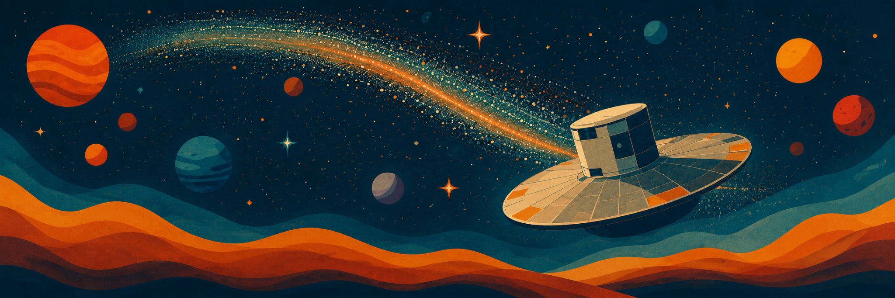

El Gaia DR4 Workshop se realizará el 22 de septiembre de 2026 en la Universidad Diego Portales, Santiago de Chile. El encuentro combinará presentaciones breves sobre Gaia y el próximo Data Release 4 con sesiones prácticas enfocadas en herramientas para ciencia de exoplanetas.

Información práctica
- Fecha: martes 22 de septiembre de 2026.
- Inicio: 09:30.
- Lugar: Auditorio Nicanor Parra, Vergara 324, Santiago, piso -1.
- Coffee breaks y almuerzo: incluidos para participantes.
Antes del workshop
Las sesiones prácticas estarán enfocadas en el uso de las herramientas y no en su instalación. Por esto, solicitamos a las y los participantes instalar el software necesario antes del workshop. El programa actualizado y las instrucciones de instalación se mantienen en el PDF disponible abajo, de modo que cualquier cambio pueda hacerse en un solo lugar.
Para problemas de instalación, bugs o consultas, contactar a Andrea Bernardi en andrea.bernardi@mail.udp.cl.